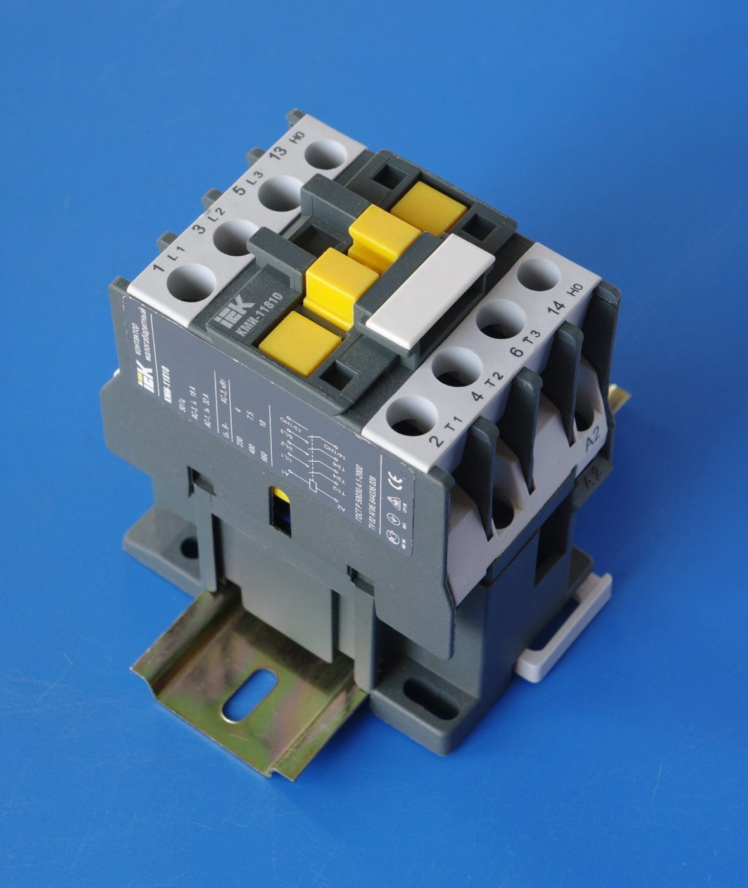
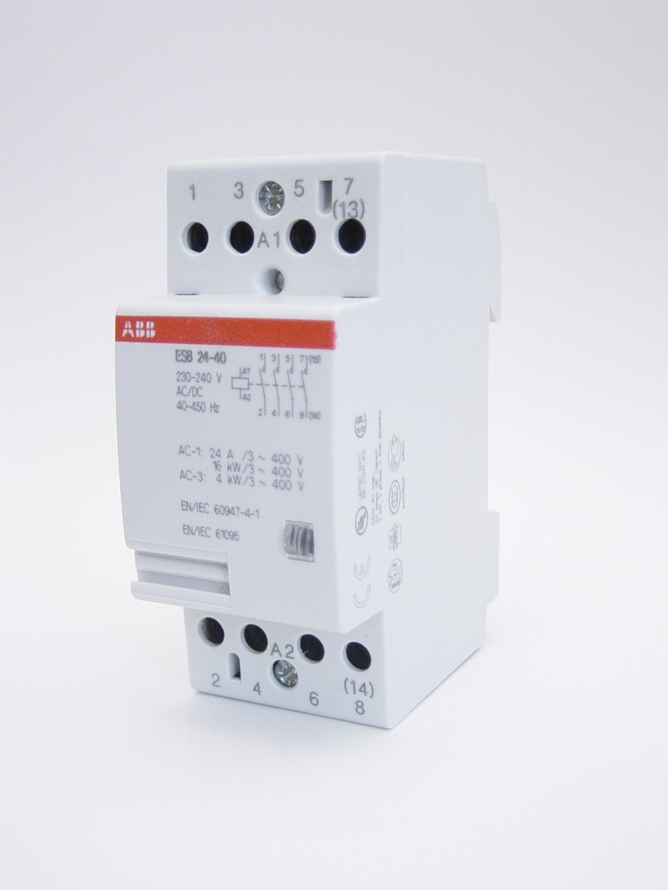

Contactor industrial
vs modular
INDUSTRIAL

3 polos de potencia + auxiliares
Hecho para
motores
: corriente
AC-3
Bornes 1/L1… 2/T1… y bobina A1-A2
Acepta relé térmico y bloques auxiliares
Riel DIN o placa de montaje
MODULAR

Hasta 4 polos (ABB ESB24-40: 4 NA)
Para
resistencias e iluminación
(AC-1 / AC-7a)
24 A en AC-1
pero solo
9 A (4 kW) en AC-3
36 mm de ancho, como los breakers
Bobina silenciosa AC/DC
VS
Para un motor, compara la corriente
AC-3
, no la que dice el frente
@miguelesquit
Fuentes:
IEC 60947-4-1 (AC-1, AC-3) · ABB, ficha ESB24-40 · IEC 61095 (AC-7a) ·
Foto:
“Contactor DIN IEK”, Kae, CC BY-SA 3.0 · “Installationsschuetz ABB ESB 24 40”, Cherubino, CC BY-SA 2.5 · Wikimedia Commons